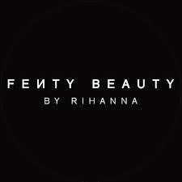

FENTY BEAUTY
Fenty Beauty (stylized as FEИTY BEAUTY) is a cosmetics brand by Rihanna, that was launched on September 8, 2017. Popular for its broad inclusivity across various skin tones, its Pro Filt'R foundation became high-demand upon first release. The original foundation launch included 40 shades, and has since expanded to 50.
Fenty Beauty uses models from many ethnicities allowing the brand to become known as “the new generation of beauty.” Rihanna focused on all women and now all women can't stop buying her products. 3. It's about the quality. Simply put, Fenty Beauty produced a higher quality product than its competitors.
WHERE WILL YOU FIND THIS STORE?
See map for more information.